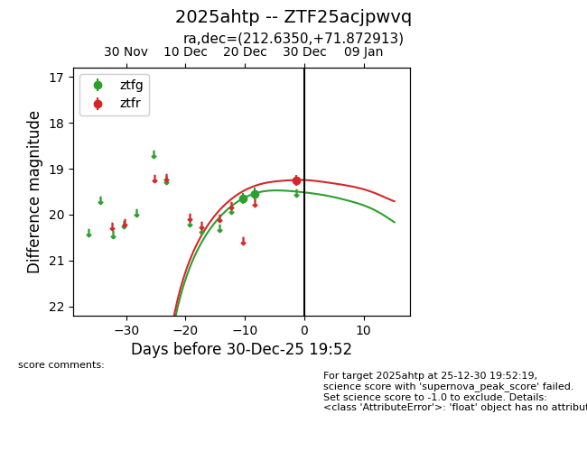
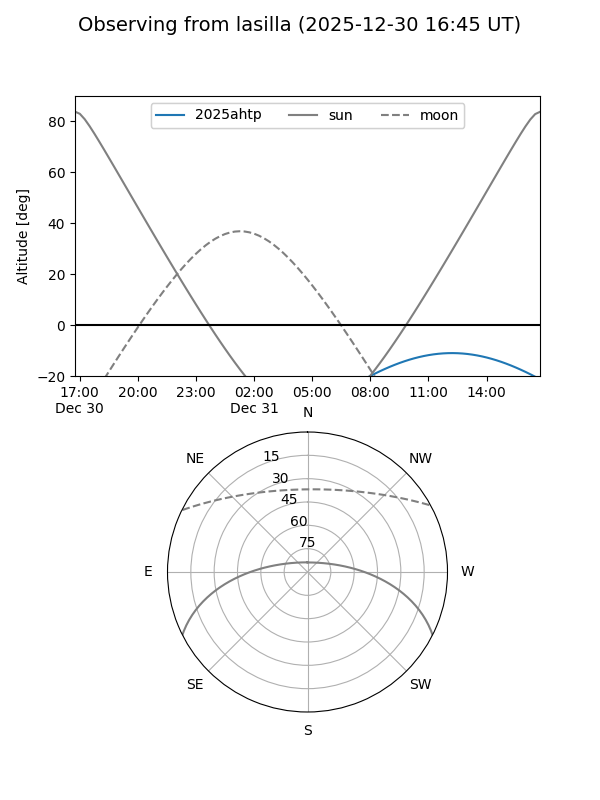
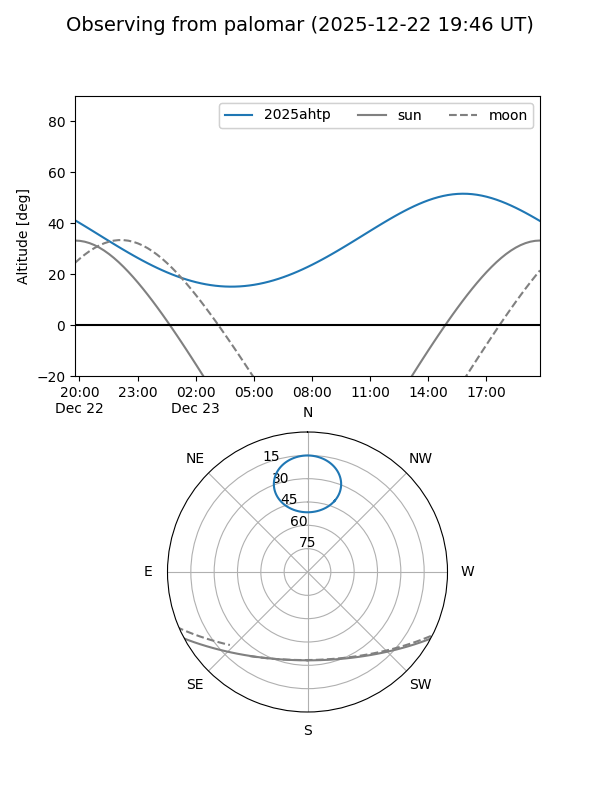
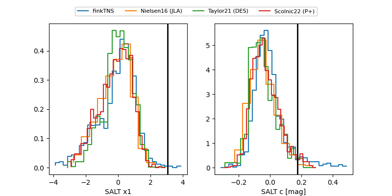

2025ahtp
Target 2025ahtp at 2025-12-22 19:44
Aliases and brokers:
FINK: fink-portal.org/ZTF25acjpwvq
Lasair: lasair-ztf.lsst.ac.uk/objects/ZTF25acjpwvq
ALeRCE: alerce.online/object/ZTF25acjpwvq
TNS: wis-tns.org/object/2025ahtp
YSE: ziggy.ucolick.org/yse/transient_detail/2025ahtp
alt names
ZTF25acjpwvq (ztf,fink_ztf)
2025ahtp (tns,yse)
Coordinates:
equatorial (ra, dec) = 212.6350,+71.87291
equatorial (HMS+DMS) = 14:10:32.41,+71:52:22.49
galactic (l, b) = (114.5257,+43.94129)
Flags:
Photometry:
last ztfg=19.54
2 ztfg detections
Lightcurve

Visibility


Additional plots
